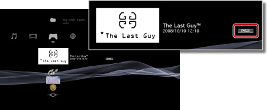

게임 > PlayStation®Store에서 다운로드한 게임 즐기기 > 다운로드한 게임 즐기기
다운로드한 게임 즐기기
 (PlayStation®Store)에서 다운로드(구매)한 게임을 즐길 수 있습니다. 게임의 종류에 따라 즐기는 방법이 다릅니다. 어떤 종류의 게임인지는 게임의 아이콘 옆에 있는 표시로 확인할 수 있습니다.
(PlayStation®Store)에서 다운로드(구매)한 게임을 즐길 수 있습니다. 게임의 종류에 따라 즐기는 방법이 다릅니다. 어떤 종류의 게임인지는 게임의 아이콘 옆에 있는 표시로 확인할 수 있습니다.

알아두기
게임 아이콘을 선택하여  버튼을 눌러 옵션 메뉴에서 [폴더 분류] > [포맷]을 선택하면 종류별로 게임을 분류할 수 있습니다.
버튼을 눌러 옵션 메뉴에서 [폴더 분류] > [포맷]을 선택하면 종류별로 게임을 분류할 수 있습니다.
PlayStation®3 규격 소프트웨어 즐기기

기본적인 플레이 방법은 디스크 형태의 PlayStation®3 규격 소프트웨어와 같습니다. 상세한 사항은  (게임 ) > [PlayStation®3 규격 소프트웨어 즐기기]를 참조해 주십시오.
(게임 ) > [PlayStation®3 규격 소프트웨어 즐기기]를 참조해 주십시오.
PlayStation® 규격 소프트웨어 즐기기
기본적인 플레이 방법은 디스크 형태의 PlayStation® 규격 소프트웨어와 같습니다. 상세한 사항은 (게임) > [PlayStation®2 / PlayStation® 규격 소프트웨어 즐기기]를 참조해 주십시오.
소프트웨어 설명서
다운로드(구매)한 PlayStation® 규격 소프트웨어의 소프트웨어 설명서를 표시할 수 있습니다. 게임 플레이 중에 무선 컨트롤러의 PS 버튼을 누른 후 표시되는 화면에서 [소프트웨어 설명서]를 선택합니다.
디스크를 교체해야 하는 게임
다운로드(구매)한 PlayStation® 규격 소프트웨어에는 디스크 교체가 필요한 게임이 있습니다. 그런 게임에서는 가상으로 디스크를 교체하는 작업이 필요합니다. 디스크를 교체하라는 메시지가 표시되면 무선 컨트롤러의 PS 버튼을 눌러 표시되는 화면에서 [디스크 교체]를 선택합니다. 화면의 지시에 따라 조작해 주십시오.
PC Engine 및 NEO GEO 형식의 게임 즐기기
게임을 즐기는 방법에 대해서는 소프트웨어 설명서를 확인해 주십시오. 설명서의 표시 방법은 게임에 따라 다릅니다.